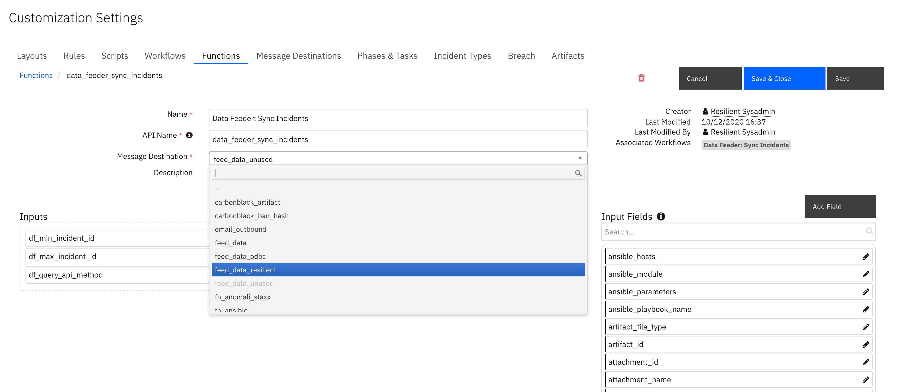
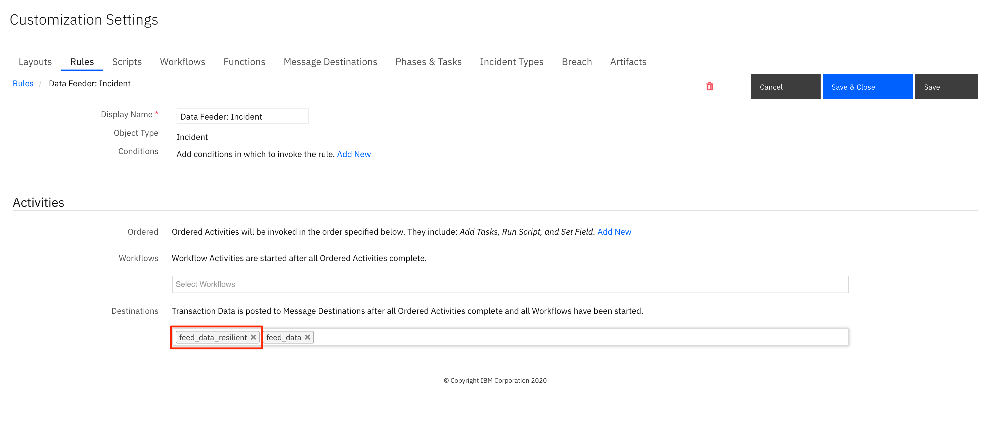
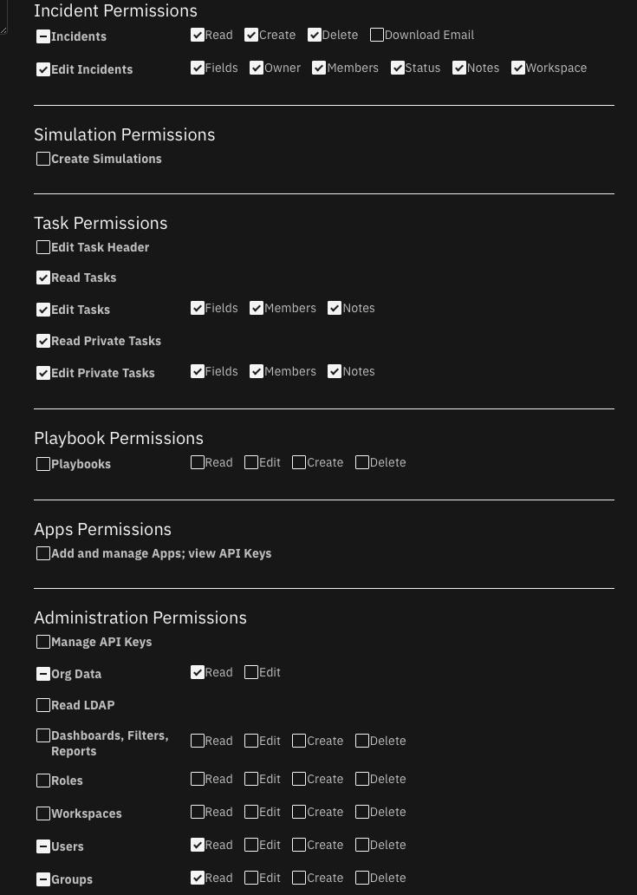

Data Feeder for SOAR¶
This package contains the QRadar SOAR (Resilient) plugin to the Data Feed suite of solutions. The Data Feed plugin allows you to maintain “replica” data for QRadar SOAR incidents, artifacts, tasks, notes, attachments and so on, in another QRadar SOAR organization in the same or different QRadar SOAR platform, as well as another QRadar Suite environment. The updates are performed in near real-time.
Refer to the documentation on the Data Feed app for use cases supported and configuration options. Also refer to the other Data Feed plugins which can be used in combination.
Features¶
Transfer incident data between two instances of QRadar SOAR (or CP4S).
Transfer incident data between two Organizations within the same QRadar SOAR instance.
Transfer incident data to more than one QRadar SOAR instance at the same time.
Synchronized incident data objects include: artifacts, attachments, notes, milestones, tasks and datatables.
Synchronize selective incident data based on a list of fields to exclude.
Choice of databases to retain synchronization information: SQLite or PostgreSQL.
V2.0 introduces bidirectional synchronization. See V2.0 Changes for more information.
License¶
Unless otherwise specified, contents of this repository are published under the MIT open-source LICENSE.
History¶
Date |
Version |
Notes |
|---|---|---|
9/2024 |
2.1.0 |
Custom artifact types supported |
5/2024 |
2.0.0 |
Bi-directional synchronization between source and destination SOAR organizations |
4/2024 |
1.1.0 |
Enhancements for datatable select/multi-select fields. Fixes for synchronizing task attachments and notes. Threaded updates for better performance. |
V2.0 Changes¶
2.0.0 introduces bidirectional changes. This can be used during a transitional period of moving to a new SOAR platform or QRadar Suite. This solution uses a shared PostgreSQL database and requires the SOAR data feeder plugin to be installed in both SOAR organization environment. One environment is considered the ‘source’ and the other as the ‘destination’. The following incident objects are synchronized:
Incident Object |
Source Synchronization |
destination Synchronization |
Notes |
|---|---|---|---|
Incident |
Bidirectional |
Bidirectional |
destination incident changes (ex. severity, date occurring, incident closing) are sync’d back to the source incident. New incidents in the destination SOAR will synchronize to the source. |
Notes |
Bidirectional |
Bidirectional |
New destination notes synchronize to the source incident. |
Artifacts |
Bidirectional |
Bidirectional |
New destination artifacts synchronize to the source incident. |
Tasks |
Bidirectional |
Bidirectional |
Changes to tasks (ex. owner, due date, task completion) sync bidirectionally. |
Task Notes |
Bidirectional |
Bidirectional |
|
Task Attachments |
Bidirectional |
Bidirectional |
|
Attachments |
Bidirectional |
Bidirectional |
|
Milestones |
Bidirectional |
Bidirectional |
|
Datatables |
Bidirectional |
Bidirectional |
A custom rule is needed for each datatable to synchronize. Make sure the datatable exists in both the source and destination SOAR organizations. |
See sections Installation and Troubleshooting below for key issues when using bidirectional synchronization.
Installation¶
This app can be used in either an App Host or an Integration Server configuration. Refer to the sections below for the steps to perform.
App Host Installation¶
Apps which are installed through the SOAR UI for App Host incorporate the UI components (rules and workflows) and no additional app installation is needed.
To install or uninstall an App or Integration on the IBM SOAR platform, see the documentation at ibm.biz/soar-docs.
To install or uninstall an App on IBM Cloud Pak for Security, see the documentation at ibm.biz/cp4s-docs and follow the instructions above to navigate to Orchestration and Automation.
Integration Server¶
When installing on an integration server, install this base Data Feeder app prior to installing the SOAR plugin Data Feeder.
If adding support for PostgreSQL, install the package as:
[sudo] pip install --upgrade rc_data_feed_plugin_resilientfeed-<version>.tar.gz[postgres]
Configuration¶
Edit the resilient-circuits configuration file, as follows:
In the
[resilient]section, ensure that you provide all the information required to connect to the QRadar SOAR platform.In the
[feeds]section, define the feed(s) you intend to use and create separate sections for each feed. For example:feed_names=resilient_feedIn the [resilient_feed] section, configure the settings for your QRadar SOAR environment.
[feeds]
# comma separated section names. ex. sqlserver_feed,file_feed
feed_names=resilient_feed
reload=false
# use reload_types to limit the types of objects when reload=true.
# Ex: incident,task,note,artifact,attachment,<data_table_api_name>
reload_types=
# set to true if ElasticSearch errors occur during reload=true
reload_query_api_method=false
# feed_data is the default message destination that will be listened to
queue=feed_data_resilient
# set to true if attachment data should be part of payload send to plugins
include_attachment_data=false
# if necessary, specify the supported workspace (by label, case sensitive) and the list of feeds associated with it
# ex: 'Default Workspace': ['resilient_feed'], 'workspace A': ['kafka_feed', 'resilient_feed']
workspaces=
# support for parallel execution. Default is False
parallel_execution = False
[resilient_feed]
class=ResilientFeed
# provide configuration information to the destination QRadar SOAR and Organization
host=localhost
#proxy_host=
api_key_id=
api_key_secret=
#email=
#password=
port=443
org=
cafile=false
# identify a sqlite db file to retain mapping between QRadar SOAR instances.
#sqlite_sync_file=/path/to/file
# postgresql db connection if sqlite_sync_file is not used
postgresql_connect=Driver={PostgresSQL Driver};Server=127.0.0.1;DB=<db>;Port=5432;connectTimeout=0
postgresql_uid=<acct>
postgresql_pwd=<pwd>
# optional semicolon separated list of fields to allow incidents to sync. ex. incident_type_ids in ["Phishing", "Malware"];custom_field = a;description ~ malicious
#matching_incident_fields=
# when using matching_incident_fields, specify whether 'all' or 'any' field needs to match to accept
#matching_operator=all
# optional semicolon separated list of fields to exclude from an incident. Sections of fields can be used: pii;gdpr;hipaa;cm
#exclude_incident_fields=
# optionally include references within the incident to source org_id and incident_id. Values true/false
sync_reference_fields=True
# true|false - specify whether to delete the destination incident if the source incident is deleted. Default: false
delete_incidents=false
# destination syncs changes back to source (new artifacts, notes, etc.). Only editing an incident or a task is supported
# sync_role_source = True
matching_incident_fields¶
Use this capability to filter which incidents and it’s tasks, notes, artifacts, etc. are sent to the destination organization. Below are a few examples for how to use this capability.
Filter on the incident owner.
matching_incident_fields=ownerid == user@example.com
Filter on any incident type phishing or malware.
matching_incident_fields=incident_type_ids in [‘Phishing’, ‘Malware’]
Filter on the title or description field containing the word ‘malicious’.
matching_incident_fields=name ~ malicious;description ~ malicious matching_operator=any
Filter on a custom boolean field set to True.
matching_incident_fields=custom_bool == True
Filter on open incidents. This is useful when performing a bulk load with as
reload=trueor using theData Feeder: Sync Incidentsfunction.
matching_incident_fields=plan_status == A
Filtering on date and datetime fields are a little trickly as the epoch timestamp is needed. Websites such as https://www.epochconverter.com/ can be used to generate a timestamp. Be sure to use the GMT timezone and use a timezone in milliseconds.
matching_incident_fields=discovered_date >= 1604073642000
ResilientFeed Class¶
This class allows you to write all incoming data to another QRadar SOAR Organization. Incidents, Artifacts, Attachments, Datatables, Notes, Milestones and Tasks (including task notes, and attachments) are copied. The following configuration items are supported:
Key |
Values |
Description |
|---|---|---|
class |
ResilientFeed |
Indicates that the section is for an QRadar SOAR synchronization. |
host, #proxy_host, api_key_id, api_key_secret, #email, #password, port, org, cafile |
Specify the connection values similar to the |
|
sqlite_sync_file |
/path/to/file |
Absolute path to a file to retain mapping information between the two QRadar SOAR instance. Comment out if using PostgreSQL |
postgresql_connect |
Driver={PostgresSQL Driver};Server=127.0.0.1; DB=yourDB;Port=5432; connectTimeout=0 |
connection string when using PostgreSQL. Comment out otherwise. |
postgresql_uid |
postgreSQL_Acct |
Your PostgreSQL account |
postgresql_pwd |
postgreSQL_Acct |
Your PostgreSQL password |
matching_incident_fields |
plan_status == ‘C’; custom_field > 5 |
Optional semicolon separated list of comparison tuples to determine the criteria for synchronizing an incident and it’s tasks, artifacts, etc. Use the syntax: <field> <operator> <value>. Operator may be one of: ~, ==, >=, <=, <, >, in, ‘not in’, is, and ‘is not’. Use |
matching_operator |
any|all |
When using matching_incident_fields, either |
exclude_incident_fields |
severity_code; date_started; custom_field |
Optional semicolon separated list of fields and field sections to exclude when synchronizing an incident. |
sync_reference_fields |
True|False |
Specify |
delete_incidents |
true|false |
Specify ‘True’ to delete the destination incident and it’s data when the source incident is deleted |
sync_role_source |
true|false |
Specify ‘True’ to identify this SOAR organization as the source SOAR. ‘False’ represents the destination SOAR. The default is ‘True’. |
Requirements¶
This functionality has been tested with QRadar SOAR instances >= v48. There is presently an issue with v37.0 restricting the live synchronization of a newly deleted artifact. If this capability is critical to your requirements, use QRadar SOAR version >=v37.1.
The destination QRadar SOAR platform must be at the same version or greater than the source QRadar SOAR platform.
The destination QRadar SOAR organization must have the same set of custom fields, datatables, incident types, playbooks (tasks and phases) in order to synchronize incident data. Use the export/import functionality under
Administrator Settings.The destination QRadar SOAR organization should have the same users and groups defined. For any user or group not found, incident and task ownership as well as member lists will be left empty.
To synchronize datatables in real time, create rules specifying the
feed_data_resilientmessage destination in order to changes.
Setup Steps¶
Ensure QRadar SOAR version requirements are met for both the source and destination instances.
Perform the manual duplication of custom fields, incident types, phases and tasks, etc. by exporting these configurations from the QRadar SOAR source organization and importing them to the destination QRadar SOAR organization.
Manually recreate the users and groups needed in the destination QRadar SOAR organization.
Configure the app.config settings with the settings for the destination QRadar SOAR organization and, optionally, the criteria for the types of incidents to synchronize and fields to exclude.
Run
resilient-circuits runto confirm connectivity to both instances of QRadar SOAR (withreload=False).The best way to test is to set
reload=Falseunder[feeds]in your app.config file, and in the source QRadar SOAR organization, run theData Feeder: Sync Incidentsrule to synchronize a small number of incidents. Change the message destination of theData Feeder: Sync Incidentsfunction tofeed_data_resilientas it may be used by another Data Feeder plugin.

If using other Data Feeder plugins (ex. odbcfeed), change the Data Feeder rules to include the
feed_data_resilientmessage destination. Restart resilient-circuits in order for the message destination change to take effect.

Bidirectional Synchronization¶
Bidirectional synchronization is performed with the data feeder SOAR plugin installed in both SOAR/QRadar Suite organization environments, sharing the same database to track the relationship between incidents, tasks, notes, etc. When using App Host, this database must be PostgreSQL. PostgreSQL is also suggested in an Integration Server environment based on it’s robustness and performance.
If bidirectional updates are unnecessary, then you only install this app in the source SOAR environment.
When configuring each plugin, one SOAR organization is designated as the source (see app.config setting: sync_role_source) with the other designated as the destination. These identifiers are important to ensure database lookups are performed correctly when updating tasks, or creating new artifacts or notes in the destination SOAR organization.
The database plays a key role to ensure there is no duplication of incidents, tasks, notes when creating or updating data. Special logic called debounce is used to ensure updates made from the either SOAR organization do not infinitely bounce back and forth between the two organizations. To that end, if there are repeated failures to persist data to the database, the app will shut down. Additional information can be found in the Troubleshooting section.
Not all incident data changes made in the destination SOAR organization is returned to the source SOAR organization incident. For instance, changes to GDPR breach information may not synchronize. However, changes to the owner, severity, etc. and closing the incident will synchronize.
Considerations¶
For non bidirectional synchronization environments, if real-time synchronization remains in place, changes in the source QRadar SOAR data will overwrite any changes made in the destination QRadar SOAR organization data.
Deleting a source incident, task, artifact, etc. will also delete the matching destination information.
Synchronization of incidents may fail if newer required fields were created that were not present on these older incidents. Same is true for newer ‘on close’ created fields. This can be overcome by changing the fields from
requiredtooptional.Unofficial timing tests shows creating incident data can take .3-.5 seconds per each data type. Consider the time it will take for all your incident data to synchronize when using
reload=True.Review the permissions given to destination QRadar SOAR user or api_key. They must have the appropriate values to read and write incidents, artifacts, attachments, comments, milestones, tasks, and datatables. In addition, some incidents have wiki entries associated with them. Finally, older versions of QRadar SOAR also intermix simulation incidents. Provide the permission to create those as necessary.

Limitations¶
Unfortunately, the create date of the original incident is lost when the destination incident is synchronized.
Timer data cannot be synchronized.
Presently, artifacts with custom artifact types cannot synchronize.
Incident email messages (via the built-in Inbound Email Connectors) do not synchronize.
Synchronization Methods¶
Three methods exist for synchronizing incident data:
reload=True - This app.config setting will synchronize all incidents (including those closed) each time resilient-circuits is run. Review performance considerations above in [Considerations].
real-time changes - If the automatic rules for incident, artifact, tasks, etc. are enabled, then any change to a object will perform the synchronization to the source (for bidirectional synchronization) and the destination organization. Note: Datatable rules need to be created in order to synchronize them in real-time.
Data Feeder: Sync Incidents function - This function allows one to specify the range of incident data to synchronize. This is useful to limit the range of incidents to transmit.
Behavior¶
Unexpected behaviors can occur and are detailed here.
If an incident is originally filtered via the
matching_incident_fieldssetting, all incident data are filtered. If in the future that incident changes so that the matching criteria passes, at the time the incident is changed, only the incident is synchronized. To include all the other data elements such as tasks, artifact, attachments, etc., use theData Feeder: Sync Incidentsfunction.Attachments cannot be updated.
Database Support¶
An external database is used to maintain a mapping of the source and destination incident data. For example, source incident 2100 maps to destination incident 2222. The app will look up this relationship in order to update incident 2222 when ongoing changes to incident 2100 are made. Either a SQLite database (for Integration Servers) or a PostgreSQL (for app host or Integration Servers) can be used.
SQLite Database¶
A SQLite database can be used to maintain a mapping of incident data between the source and destination QRadar SOAR instances. This database cannot be used for App Host environments due to the restartability of containers. Two tables are maintained for data synchronization:
data_feeder_sync - contains specific ids for source and destination instances and status. The fields are as follows:
type_name |
org1 |
org1_inc_id |
org1_type_id |
org2 |
org2_inc_id |
org2_type_id |
last_sync |
status |
|---|
Status can be one of active, filtered, deleted or bypassed.
data_feeder_retry - failures to create a data element are retried when the parent element is synchronized. For example, this is needed when tasks appear for synchronization before the incident. Once the incident is synchronized, all the dependent elements will be retried. The schema is as follows:
type_name |
org1 |
org1_inc_id |
org1_type_id |
org1_dep_type_name |
org1_dep_type_id |
org2 |
org2_inc_id |
payload |
last_attempt |
|---|
Troubleshooting SQLite DB¶
There are many tools to view the db tables, including open-source solutions. DBeaver is one open-source application supporting many different database types including sqlite.
Use the following SQL statements for problem diagnostics:
select * from data_feeder_sync where org2=
select * from data_feeder_retry where org2=

PostgreSQL Database¶
Like the SQLite database, the same table structures are created and maintained in PostgreSQL.
Use the SQLite DB if performing a one-time or limited-timeframe synchronization. Use PostgreSQL for continuously synchronization or when using App Host containers. PostgresSQL is the only database supported for the bi-directional synchronization option.
Troubleshooting Tips¶
Synchronization could fail for the following reasons:
Missing custom fields, custom incident_types, phases, etc. Ensure you have exported and re-imported these customizations into the destination QRadar SOAR organization. Also check the permissions set on your destination QRadar SOAR user account or api token associated with incident, artifact, task, etc. creation, including creating wiki pages.
Artifacts with custom artifact types cannot be synchronized at this time.
Older incident fields missing required fields defined at a later point in time. The only remedy is to modify the definition of the fields from
requiredtooptionaland then resync the field using the ruleData Feed: Sync Incidents.Matching criteria filtered the incident. Review the values specified in
matching_incident_fieldsand the value specified inmatching_operator. If a field is richtext, use the~operator to find the value. For example: description ~ warning.Change the log level to DEBUG to receive additional troubleshooting information on synchronization issues.
Changes to tasks, artifacts, notes, etc. before the incident is synchronized.
If the log displays a message such as:
Incident not found. Queued to retry task:xxx->xxx to xxxRun the incident action:Data Feeder: Sync Incidentsto synchronize the incident and all it’s related tasks, artifacts, notes, etc.
[resilient]
loglevel = DEBUG
For bidirectional synchronization, if there are more than 5 consecutive failures to update the database, the app will be shutdown. This is necessary as database failures can cause updates between the source and destination organizations to bounce back and forth infinitely creating duplicates of the data in question: incident, note, task, artifact, etc.
This is what the logs will look like when the final database errors occur and when the app is shutdown. The remediation steps are to review the errors (possibly database access is lost), correct the issue, and restart the app.
2024-04-25 20:11:50,363 ERROR [db_sync_postgres] [MainThread] find_sync_row err ('08S01', '[08S01] SQLPrepareW unable due to the connection lost (35) (SQLPrepare)')
2024-04-25 20:11:50,363 ERROR [threadpool] [MainThread] Critical failure in feed: resilient_feed SyncRowError(OperationalError('08S01', '[08S01] SQLPrepareW unable due to the connection lost (35) (SQLPrepare)')). Removing plugin
2024-04-25 20:11:50,364 INFO [threadpool] [MainThread] No feed found or failure to satisfy workspace: 'Default workspace' for task (256)